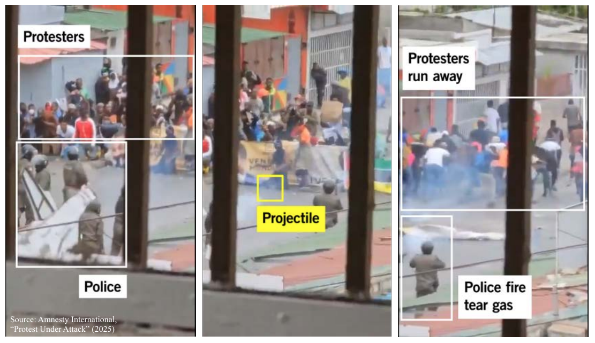

In 2024, Mozambicans voted to elect a new government. Opposition leader Venâncio Mondlane contested the election results and called for a nation-wide labour strike. Thousands across the country took to the streets to protest, in a largely peaceful manner.


As a researcher with Amnesty’s Digital Verification Corps, I documented alleged human rights violations by Mozambican security forces, focusing on the unlawful use of less-lethal weapons. I sourced, verified, and analyzed digital evidence, including the video shown here, to document the use of these weapons against civilians.
I verified the video's authenticity through visual and satellite analysis, using geolocation and chronolocation techniques to match visible landmarks, buildings, road layouts, and other environmental features.
The final report brought together digital evidence and visual analysis with witness testimony to document violations and call for accountability.
Read the report